三井海洋櫻花號
MITSUI OCEAN SAKURA
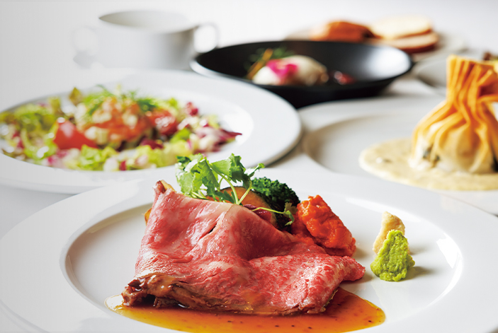
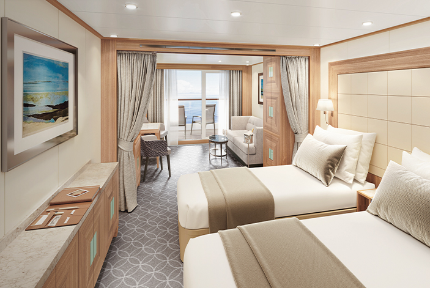
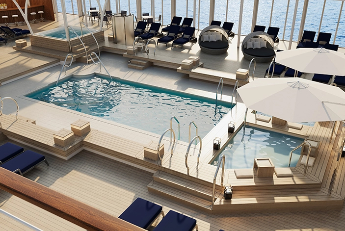

甲板平面圖
Deck Plans
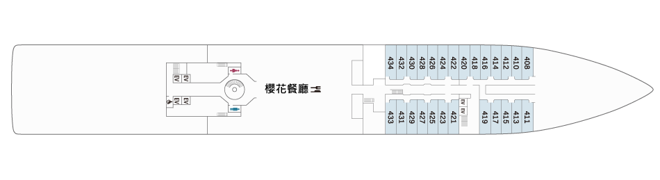
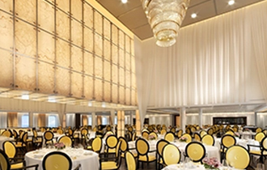
櫻花餐廳
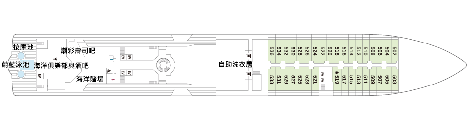
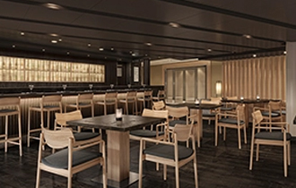
潮彩壽司吧
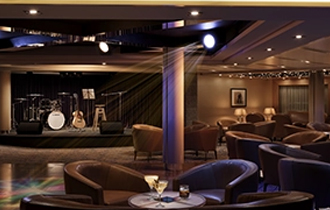
海洋俱樂部與酒吧
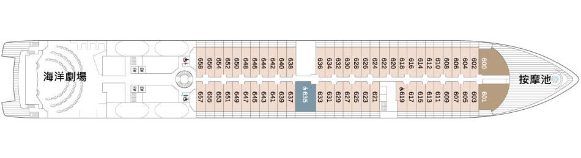
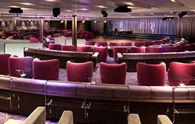
海洋劇場
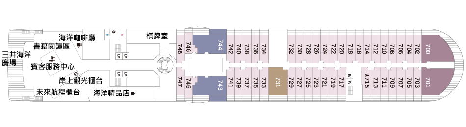
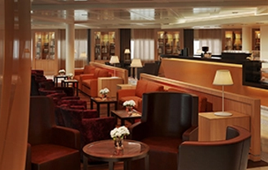
三井海洋廣場
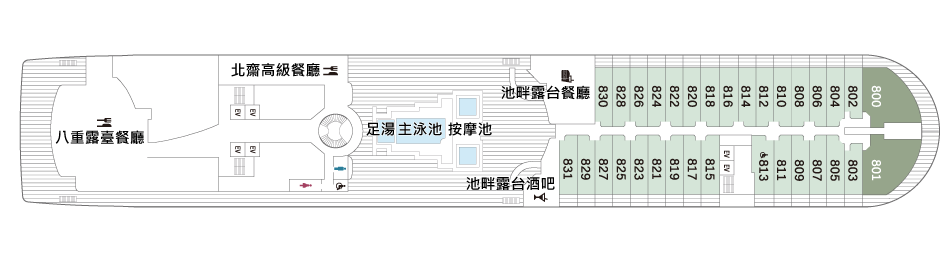
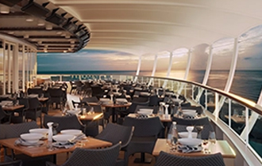
北齋高級餐廳

八重露臺餐廳
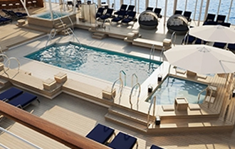
主泳池
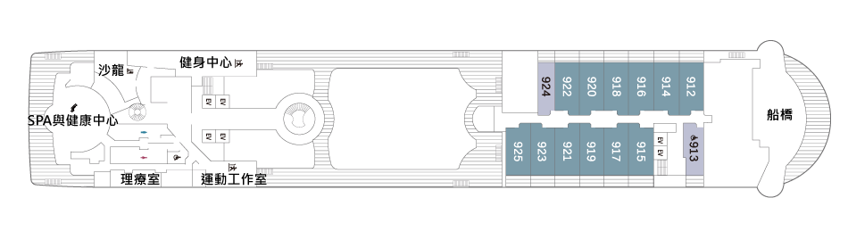
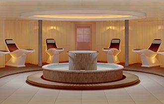
SPA與健康中心
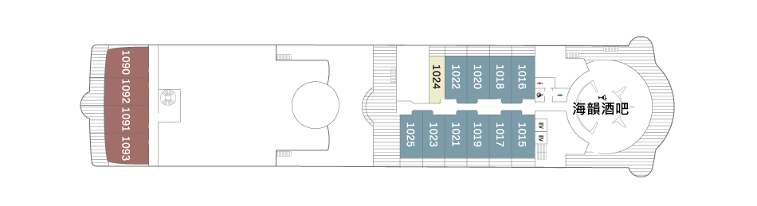
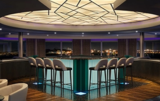
海韻酒吧
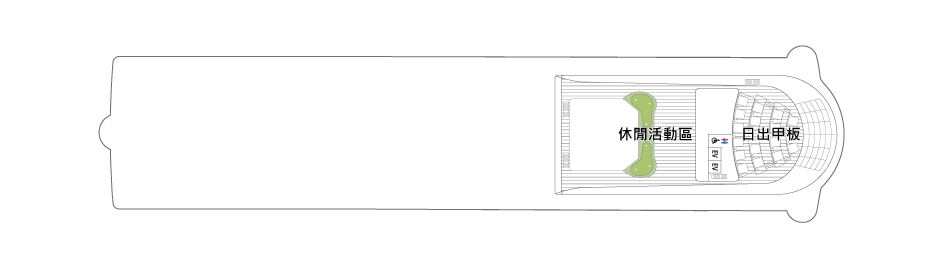
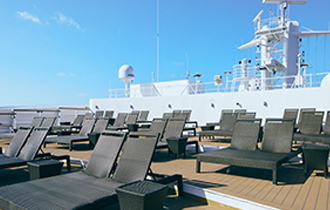
日出甲板
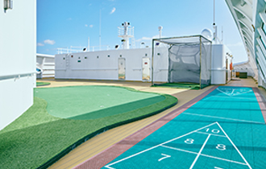
休閒活動區
MITSUI OCEAN SAKURA
海上花季，正式啟航，包括客船時代在內，商船三井集團以逾一百四十年的歲月， 持續為旅人描繪屬於海上的旅途風景。承襲這份百年航海精神的三井海洋櫻花號，以嶄新的姿態啟航，為旅人獻上一段真摯而動人的海上時光。
全長不足二百公尺的靈巧船體，使她得以深入日本各地的港灣、離島與靜謐海域，引領旅人走近絕美海岸線與迷人港町。 貼近自然、彷彿走入秘境般的航行時刻—— 那是唯有在郵輪旅程中，方能細細體會的獨特風景。
同時，櫻花號也延續自「日本丸」三十五年累積而來的海上餐飲精髓。 由熟悉海上節奏的主廚團隊，以嚴選食材與細膩巧思，為旅途中的餐桌， 添上一道道溫潤而富層次的風味。 全船客艙皆為海景套房， 其中約九成配備私人陽台。再加上多處自在休憩的公共空間與開放式甲板，讓旅人在航程之中，隨時回到屬於自己的從容節奏。 我們期望，這艘船能串連旅客與各地港灣，也連結人與人之間的情感。 全體船員將以真誠之心迎接每一次相遇，為每一位旅人，獻上一段滿載邂逅與感動的海上旅程。
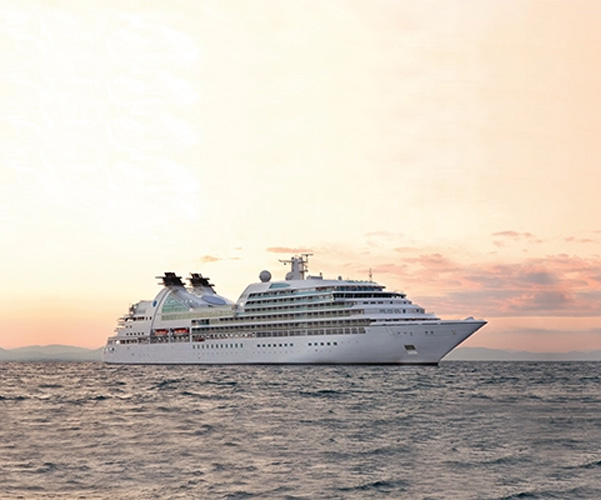
Q&A
相關問題
在三井海洋郵輪上無需支付小費。
船上設有醫療中心，配有專業醫師與護理人員，為賓客提供基本醫療協助。
- 如您需攜帶氧氣濃縮器或其他醫療設備，請於預訂行程時事先告知您的旅行社，以便安排相關協助
請以優雅休閒（Smart Casual）的裝扮享受郵輪生活。晚間敬請配合遵守船上的服裝規範。相關服裝規定(第29至31頁)，請參閱登船資訊或《 PORT & STARBOARD》船上日報。
三井海洋郵輪配備了減少船身搖晃的裝置（鰭狀穩定器）。若您仍感到擔心，建議自行攜帶適用的暈船藥以備不時之需。船上亦設有醫療中心，提供暈船相關治療服務，惟該服務將另行收費。
每晚送至您套房的《PORT & STARBOARD》船上日報，將詳列隔日的活動資訊以及各項設施與服務的營業時間。
- 內容將包含餐廳與咖啡廳的營業時間與地點、日出與日落時間、各項活動的時間、靠港與登陸資訊、岸上觀光行程等詳細資訊
不得攜帶寵物（動物）登船。
乾洗服務、瓶裝與高級葡萄酒、船上購物、SPA與美容沙龍服務、停靠港口的岸上觀光行程等項目需另外收費。
詳細資訊請參閱《PORT & STARBOARD》船上日報以及各設施的服務目錄。
【自助洗衣】
自助洗衣設施位於5樓甲板，備有洗衣機、烘衣機，以及洗衣精與柔軟精等，歡迎自由使用（24小時開放），不另收費。
【洗衣服務】付費服務
請將洗衣單附於洗衣袋上，並於上午9:00前掛於套房走廊側門把上。
- 本服務不提供乾洗項目，部分精緻衣物可能無法受理，敬請見諒
- 使用自助洗衣設施時，請自行妥善保管個人物品；如發生遺失、失竊或損壞等情形，恕本公司無法負責
可以，船上可使用輪椅。但接駁船及需搭乘接駁船的港口通常不適合輪椅使用者或行動不便的賓客上下船。使用輪椅的賓客須事先提交健康問卷。詳細資訊請參閱第13頁。
若您獲得了船上消費抵用金，該消費抵用金將於登船後自動存入您的船上帳戶。船上消費抵用金等同現金，但僅限於船上使用。相關使用規定，請於登船前向您的旅行社或於登船後向賓客服務櫃檯確認。
如何使用您的船上消費抵用金：
- 岸上觀光行程
- 預約制特色餐飲體驗
- SPA療程
- 船上購物
- 高級與瓶裝葡萄酒、烈酒以及其他項目
✦ 套房內配備兩種電源插座：
- －100V／60Hz，適用於日本與北美地區之A型插頭
- －220V／60Hz，適用於歐洲地區之C型／SE型插頭
如使用日本的電器，請選用 100V／60Hz（A型插頭）插座。
✦ 若您的電器未具備自動變壓功能，請自行攜帶變壓器。使用完畢後，請務必拔除插頭。
✦ 為安全起見，請勿使用非船上提供之高溫電器產品。
✦ 使用電熱水壺時，請務必使用套房內對應插座。
✦ 床邊檯燈設有USB 插孔，可用於為手機等設備充電（部分套房不提供此設備）。
由於本船登記為外籍船舶，即使在日本領海內航行，仍視同位於海外領域。因此對於植物等物品的攜帶進出，將依相關規定受到限制。
✦ 若您欲攜帶植物*入境日本（即從船上帶下），須出示出口國政府機關核發之植物檢疫證明書。
- 植物、水果、蔬菜、穀物、切花、種子、苗木、乾燥花等皆屬限制品項
（請注意即使您在船上獲贈上述物品，如花卉等，下船時亦無法攜帶離船）
✦ 船上餐廳或套房內所提供之水果不得攜帶下船。
✦ 肉類及其加工製品（如香腸、火腿等）不得攜帶入境日本，也不得帶離船隻。
由於本船登記為外籍船舶，海關查驗程序將依海外入境標準辦理。
✦ 下船時，請賓客自行攜帶所有行李，前往櫃檯將「攜帶物品及未隨身物品申報單（海關申報單）」交予現場之海關人員。
✦ 如您有從海外分開寄送的物品（例如大型藝術品），請務必申報。
是的，三井海洋郵輪為外籍註冊船舶，當船舶航行於國際水域時，船上購物可享有免稅優惠。
其他資訊請參閱 郵輪指南